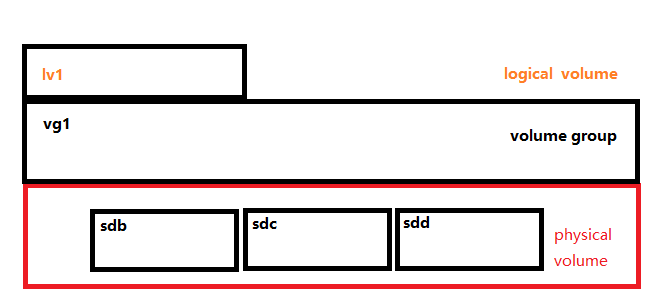

逻辑卷LVM管理
一个物理设备就是一个物理卷、也就是一块硬盘也就是一个物理卷。
逻辑卷使用起来比物理卷更加灵活。由于系统是放在逻辑卷上的，因此可以通过扩展逻辑卷，从而可以实现不关机扩展卷。
逻辑卷是将几个物理卷圈到一起，将多个大小不通的物理卷（硬盘）拼接到一起，拼接成逻辑组。然后按照需要进行切割成逻辑卷
创建流程

创建物理卷(physical volume)
pv操作
[root@localhost ~]# pvcreate /dev/sdb /dev/sdc /dev/sdd
Physical volume "/dev/sdb" successfully created.
Physical volume "/dev/sdc" successfully created.
Physical volume "/dev/sdd" successfully created.
查看物理卷
[root@localhost ~]# pvs
PV VG Fmt Attr PSize PFree
/dev/sda2 centos lvm2 a-- <39.00g 4.00m
/dev/sdb lvm2 --- 5.00g 5.00g
/dev/sdc lvm2 --- 5.00g 5.00g
/dev/sdd lvm2 --- 5.00g 5.00g
可以看到有一个逻辑组centos，新的三个物理卷没有所属的逻辑组。
创建卷组(volume group)
为新增加的三个物理卷创建所属的卷组
[root@localhost ~]# vgcreate vg1 /dev/sdb /dev/sdc /dev/sdd
Volume group "vg1" successfully created
查看卷组
[root@localhost ~]# vgs
VG #PV #LV #SN Attr VSize VFree
centos 1 2 0 wz--n- <39.00g 4.00m
vg1 3 0 0 wz--n- <14.99g <14.99g
其中pv，是这个逻辑组有几个物理卷。lv则是这个逻辑组有几个逻辑卷。
一个pv不能加入到两个卷组。
创建逻辑卷(logical volume)
创建好逻辑组之后，就需要对逻辑组进行切割，切割出逻辑卷进行使用。
[root@localhost ~]# lvcreate -L 100M -n lv1 vg1
Logical volume "lv1" created.
-L指的是逻辑卷大小
-n 逻辑卷的名称
lvcreate -L 逻辑卷大小 -n 逻辑卷名称 卷组
查看效果
[root@localhost ~]# lvs
LV VG Attr LSize Pool Origin Data% Meta% Move Log Cpy%Sync Convert
root centos -wi-ao---- 36.99g
swap centos -wi-ao---- 2.00g
lv1 vg1 -wi-a----- 100.00m
使用逻辑卷
将lv1看成一个分区即可。
[root@localhost ~]# mkfs.ext4 /dev/vg1/lv1
mke2fs 1.42.9 (28-Dec-2013)
文件系统标签=
OS type: Linux
块大小=1024 (log=0)
分块大小=1024 (log=0)
Stride=0 blocks, Stripe width=0 blocks
25688 inodes, 102400 blocks
5120 blocks (5.00%) reserved for the super user
第一个数据块=1
Maximum filesystem blocks=33685504
13 block groups
8192 blocks per group, 8192 fragments per group
1976 inodes per group
Superblock backups stored on blocks:
8193, 24577, 40961, 57345, 73729
Allocating group tables: 完成
正在写入inode表: 完成
Creating journal (4096 blocks): 完成
Writing superblocks and filesystem accounting information: 完成
[root@localhost ~]# mkdir /mnt/test
[root@localhost ~]# mount -t ext4 -o rw /dev/vg1/lv1 /mnt/test/
扩展系统盘
扩展系统盘，其实也就是扩展逻辑卷。因为是扩充逻辑卷
扩展卷组
因为卷组中没有空间了，所以需要先将物理卷扩展到逻辑组中。
[root@localhost ~]# vgextend centos /dev/sdd
Volume group "centos" successfully extended
扩展逻辑卷
[root@localhost ~]# lvextend -L +2G /dev/centos/root
Size of logical volume centos/root changed from 36.99 GiB (9470 extents) to 38.99 GiB (9982 extents).
Logical volume centos/root successfully resized.
查看扩展情况
[root@localhost ~]# lvs
LV VG Attr LSize Pool Origin Data% Meta% Move Log Cpy%Sync Convert
root centos -wi-ao---- 38.99g
已经增加了2G。
刷新系统文件系统
如果是ext4文件系统那么是不需要进行查看。如果是xfs文件系统，是需要进行刷新的。
xfs_grows /dev/centos/root
即xfs_grows 逻辑卷名称